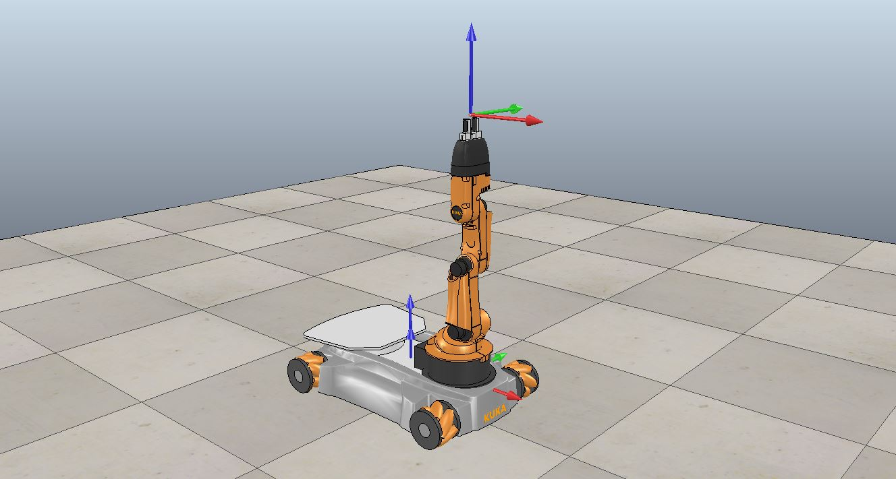
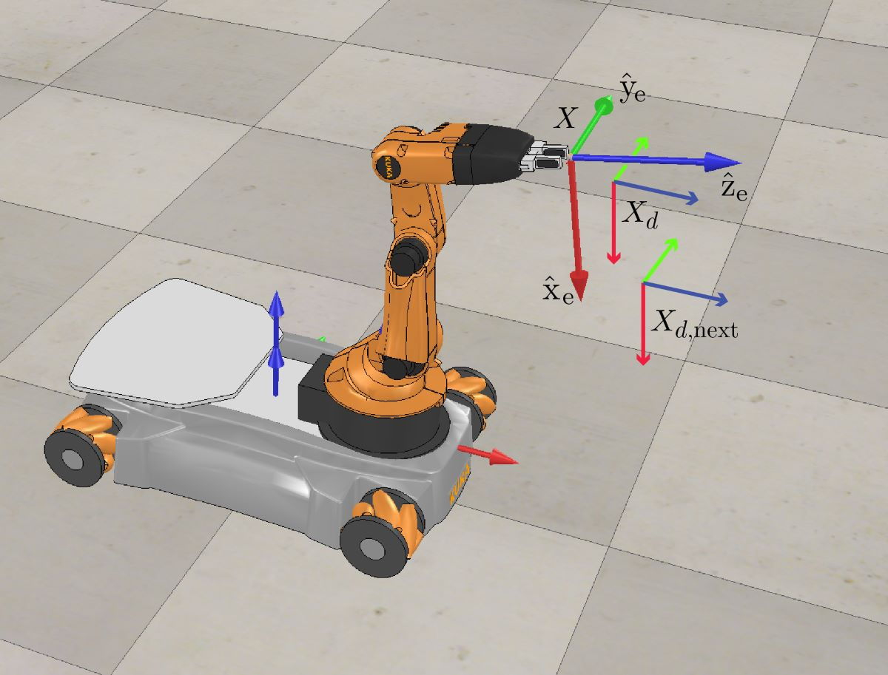
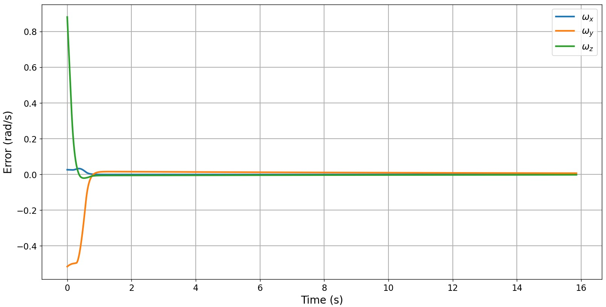
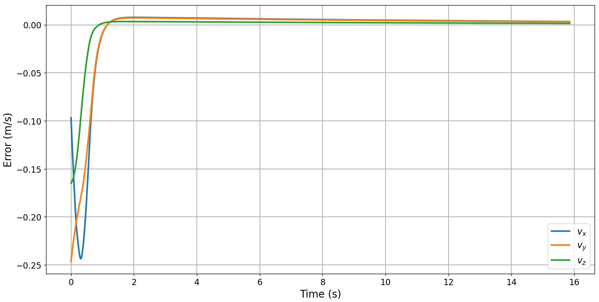
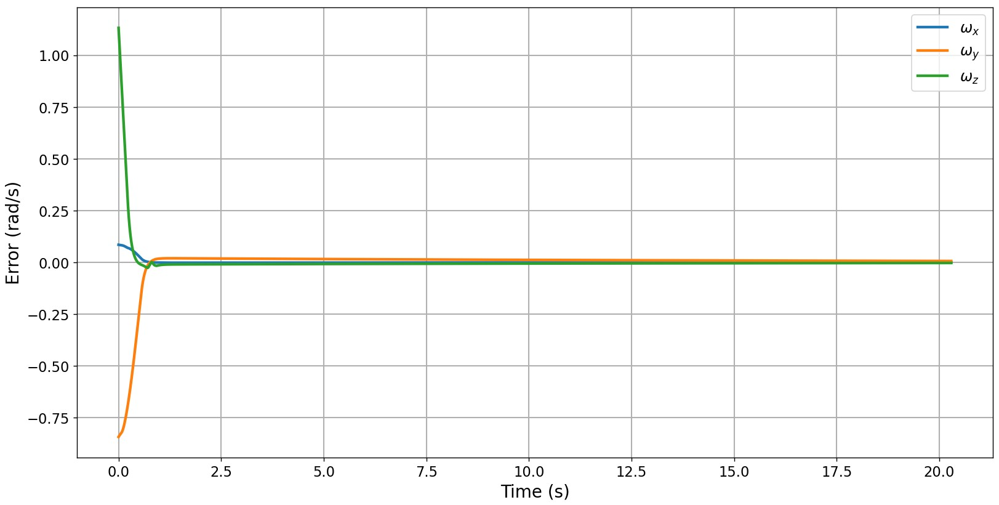
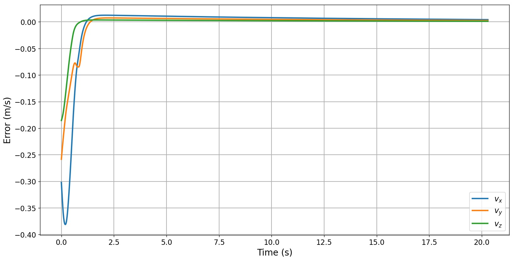

Outline
Project Description
This project is the capstone that accompanies the Modern Robotics Specialization found on Coursera. A full description of the project can be found here. The main goal was to write software in Python that would plan and control the motion of a mobile manipulator to perform arbitrary tasks involving pick-and-place operations of a cube in free space. The mobile manipulation tasks are simulated using the CoppeliaSim environment. The program incorporates odometry to track the chassis configuration and feedback control to reduce any initial or accumulated error in the motion. The mobile manipulator used in the project is the KUKA youBot, which consists of four mecanum wheels and a five-revolute joint robotic arm. An image of the robot in the home configuration is shown in Figure 1. For reference, each square on the floor surface has a side length of 0.5 meters.

Robot State
The project is divided into three milestones to track progress. Milestone 1 involves creating a function for updating the state of the robot configuration given a set of inputs. The inputs to this function include the current configuration of the robot, the controls of the wheel and arm motors, a timestep, and any limits on motor speed. The configuration is a 12-element vector consisting of three chassis variables (position and orientation), five joint angles, and four wheel angles. The controls are a 9-element vector consisting of the four wheel speeds and five joint angle speeds. The output of this function is the next configuration of the robot after one timestep. The timestep used in the simulation is 0.01 seconds, which matches the default timestep of the CoppeliaSim environment.
To calculate the new wheel and arm speeds, a first-order (forward Euler) integration step is used. For example, the change in angle of one of the revolute joints is the corresponding commanded joint speed multiplied by the timestep. To find the new chassis position and orientation, odometry is used. Odometry is the use of sensors to estimate the motion of a vehicle’s configuration. In this project, the wheels are assumed to have encoders that track the angles. The change in wheel angles can be used with a transformation matrix to find the linear velocity of the chassis frame origin and the angular velocity of the chassis frame. After transforming from the chassis frame to the global frame, the new position and orientation of the chassis are found.
To assess the validity of the first milestone, test inputs for the wheel velocities were given. The joint velocities were also tested, although updating the arm configuration is trivial. The provided wheel velocities produce predictable motion. For example, when the diagonal wheels have equal and opposite velocities of 5 rad/s, this causes the chassis to move along the y-axis at 0.24 m/s, as shown in Video 1. When the side wheels have equal and opposite velocities of 5 rad/s, this causes the chassis to spin around the z-axis counterclockwise at 0.6 rad/s, as shown in Video 2.
Reference Trajectory
The next milestone involves creating a function for generating the reference trajectory of the end-effector. During each pick and place task, the end-effector must go through 8 separate segments:
- Initial configuration to standoff configuration
- Standoff configuration to grasping configuration
- Closing the gripper on the block
- Grasping configuration to standoff configuration
- Standoff configuration to just above the final block configuration
- End-effector lowering to the final configuration
- Opening the gripper
- Raising the end-effector back to standoff configuration
The initial configuration is ideally the home configuration of the robot, although an error can be artificially included to test the feedback control (Milestone 3). The standoff configuration is the end-effector positioned a few centimeters above the block. The grasping configuration is when the end-effector’s origin aligns with the block’s origin.
The inputs to the reference trajectory generator function include the initial configuration of the end-effector, the cube’s initial configuration, the cube’s desired configuration, the end-effector’s configuration before and after grasping the cube (relative to the cube), the end-effector’s standoff configuration above the cube (relative to the cube), and the number of reference configurations generated each timestep. The output of the function is a series of reference configurations of the end-effector. Each configuration encapsulates the end-effector’s position and orientation as a function of time.
The function that was developed uses a decoupled Cartesian straight-line translation with independent rotational motion. In other words, the position of the end-effector moves in a straight line from segment to segment, while the orientation rotates at constant speed. Each trajectory segment uses a time-scaled fifth-order polynomial. The fifth-order time scaling allows for zero initial and final velocity and acceleration of each segment. These added constraints allow the reference motion to be smooth and remove jerking.
The duration of each trajectory segment was selected to achieve reasonable motion. Constraints on the linear and angular velocity of the reference frame were specified. For example, the linear velocity of the origin was not to exceed 0.2 m/s, while the angular velocity of the orientation of the origin was not to exceed 1 rad/s. Based on these constraints, the separate times to achieve the linear and rotational components were found. The trajectory time chosen was equal to the maximum of these two times.
Once the program was created, a separate CoppeliaSim environment was used to test the desired end-effector trajectory. The example trajectory is shown in Video 3. As can be seen, the end-effector follows a straight-line smooth motion thanks to the fifth-order time scaling.
Feedback Control
The final milestone was to create a function to implement a control law between the actual end-effector configuration and the reference provided from Milestone 2. The control law that was implemented was feedforward plus PI (proportional-integral) feedback. The inputs to the function include the actual end-effector configuration, the current end-effector reference configuration, the end-effector reference configuration at the next timestep, PI gain matrices, and the timestep. Figure 2 shows how the three configurations are related. The output of the function was the commanded motor velocities for the wheels and arm joints.

To generate the feedforward component of the control law, the desired end-effector twist must be found. The twist is a 6-element vector that specifies the desired linear and angular velocities of the end-effector frame. The twist is computed from the current and next reference configurations passed into the function. The feedback terms are based on the instantaneous twist error and its time integral.
To relate the twist to the motor controls, the Jacobian of the current configuration is used. The Jacobian maps wheel and joint velocities to the end-effector twist. The pseudoinverse of the Jacobian maps the twist to the velocities, which is the desired output. Once these transformations are applied, the new joint angles can be tested to see if certain joint limits are exceeded. If the limits are exceeded, the Jacobian is modified to restrict motion in those joints, and the control inputs are recomputed.
Final Simulation
Once all milestone functions are complete, they can be merged to form the main loop function. The inputs to this function include the initial configuration of the cube, the final configuration of the cube, a 13-element configuration vector (Milestone 1 configuration plus gripper state), the actual initial configuration of the robot, and the PI matrix gains of the feedback portion of the control law. The outputs of this function are a CSV file of the simulation and a CSV of the error twist of the end-effector as a function of time. The error twist is the twist required to take the end-effector from the current configuration to the desired configuration in unit time.
The first step in the main function is to generate the reference trajectory from Milestone 2. Each reference frame is looped through and passed into the control law function from Milestone 3 to generate the motor speeds. Finally, the motor speeds are passed into the function from Milestone 1 to generate the next configuration of the robot. Three parameters are hard-coded into the main function. One parameter is the number of reference frames generated per timestep (from Milestone 2). Together with the timestep, this parameter determines the control frequency. The parameter was set to 10, corresponding to a 1 kHz control frequency. The other two parameters are the maximum wheel motor speed and the maximum joint motor speed. The max wheel speed was set to 10 rad/s, while the max joint speed was set to 2 rad/s.
A significant portion of time was spent on tuning the PI gains of the feedback controller. The gains were tuned such that the controller could perform a wide variety of tasks without the need for tuning. The translational and rotational components of the gain matrices were tuned separately. For most of the tasks that were performed, the rotational error was greater than the translational error, so the rotational gains were chosen to be greater than the translational gains.
The project description gave one default task that needed to be performed. This task is shown in Video 4. The plots of the angular and linear error twist are shown in Figures 3 and 4, respectively. An initial error between the actual and reference configurations was intentionally introduced. The initial error in position was 0.31 meters, and the initial orientation error was 59 degrees. The error must be eliminated in the first segment to reliably pick up the block. This is consistent with the video and figures. The plots show most of the error gone within a second.


Once the first task was performed reliably, another arbitrary task needed to be specified. This task is shown in Video 5. The plots of the angular and linear error twist for the second task are shown in Figures 5 and 6, respectively. The initial error in position was 0.44 meters, and the initial orientation error was 81 degrees. All parameters that were used in the previous task were duplicated for this task. This demonstrates the robustness of the controller, especially of the controller.

